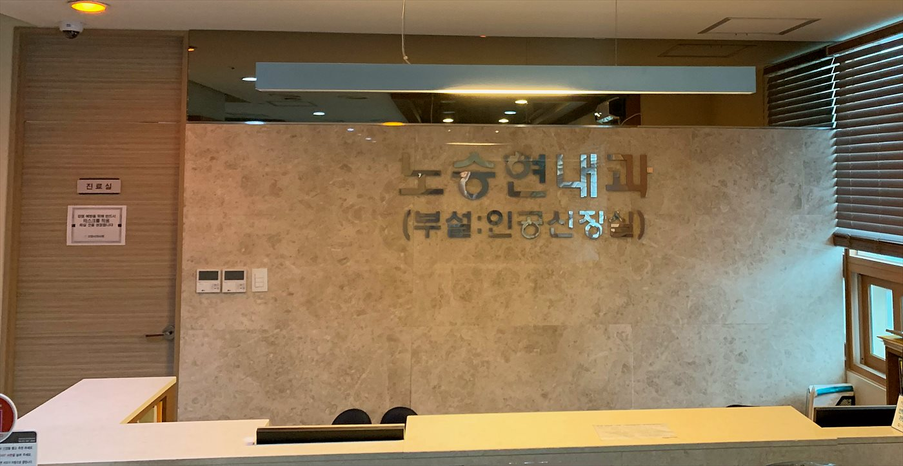

접종 가능한 백신
| 백신 | 대상 · 안내 | 비용(원) |
|---|---|---|
| 대상포진 (조스타박스) | 50세 이상 1회 접종 권장 | 170,000 |
| 대상포진 (스카이조스타박스) | 50세 이상 1회 접종 권장 | 150,000 |
| 폐렴구균 (프리베나13가) | 65세 이상, 만성질환(콩팥병·당뇨·심장·폐질환) 환자 권장 | 130,000 |
| 4가 독감 | 매년 가을 접종 — 투석·만성질환 환자 필수 권장 | 40,000 |
| B형간염 (유박스) | 항체 없는 성인 3회 접종 — 투석 예정·투석 환자 권장 | 30,000 |
| 인플루엔자 검사 | 독감 의심 시 신속 검사 | 30,000 |
※ 비용은 비급여 진료비용 고지 기준입니다. 백신 수급 상황에 따라 접종 가능 여부가 달라질 수 있으니 내원 전 전화(031-924-0875)로 확인해 주세요.
콩팥병·투석 환자에게 접종이 더 중요한 이유
- 면역력 저하 — 만성콩팥병·투석 환자는 감염에 취약해 독감·폐렴이 중증으로 진행되기 쉽습니다.
- B형간염 — 투석 환자는 B형간염 항체 확인과 접종이 표준 관리입니다. 콩팥 기능이 남아 있을 때 맞을수록 항체가 잘 생깁니다.
- 대상포진 — 면역이 떨어질수록 발생 위험과 신경통 후유증이 커집니다.
저희는 투석·신장 환자의 접종 이력을 진료 기록과 함께 관리하여, 시기에 맞춰 안내해 드립니다.
자주 묻는 질문
투석 중인데 독감 주사를 맞아도 되나요?
네, 오히려 권장됩니다. 투석 일정에 맞춰 내원 시 접종할 수 있어 따로 오실 필요가 없습니다.
대상포진 백신은 어떤 걸 맞아야 하나요?
연령·건강 상태·비용을 함께 고려해 진료 시 상담해 드립니다. 두 백신 모두 보유하고 있습니다.